Built with dark stone and bricks, the structure is a tangled sculpture of ships, churches, crosses, and key historical figures that are as mysterious as they are thought provoking. With centuries of history and tales, consider hiring a guide before you go or taking ones offer when you arrive. You’ll enjoy the local interaction, be able to ask burning questions, and get some background information you would have otherwise missed out on.
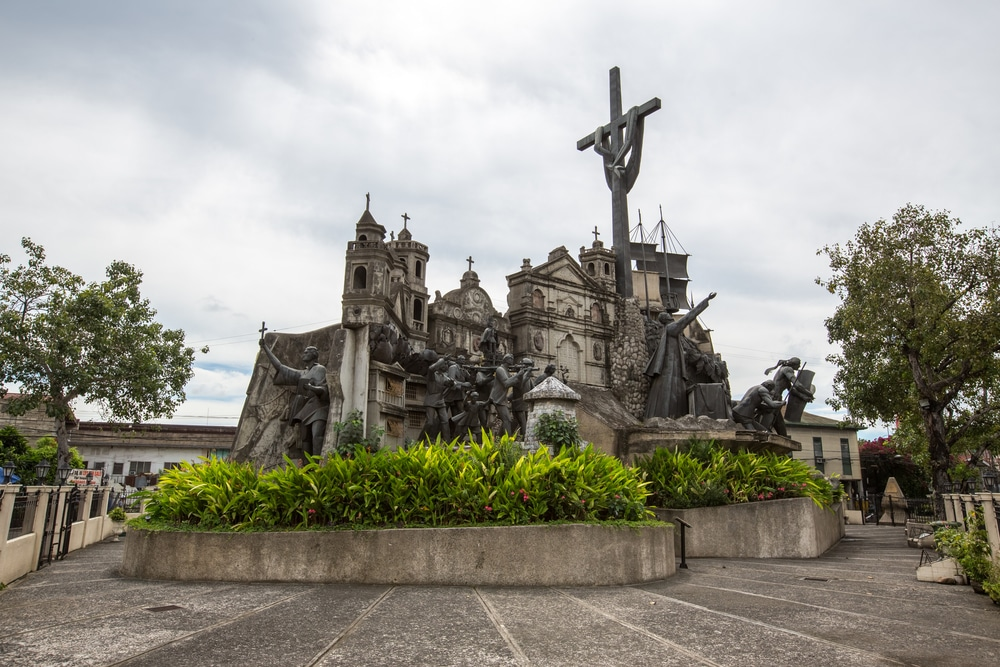 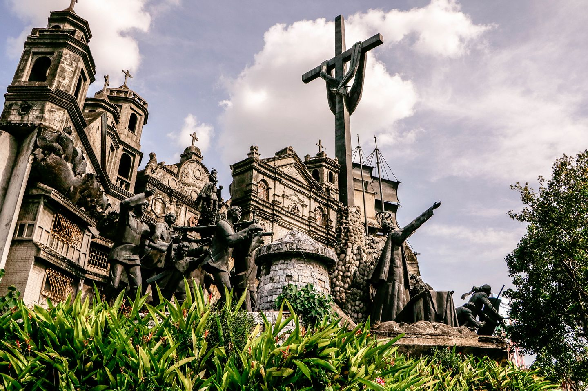The biggest fish in the world are right off the coast of the Philippines. Although they are called “sharks”, these gentle beasts are far from what you may imagine.Oslob Whale Sharks Tour Company is one of the most respected in the business. They guarantee, with 99% certainty, that you will witness and have the opportunity to swim alongside a mighty Whale Shark.
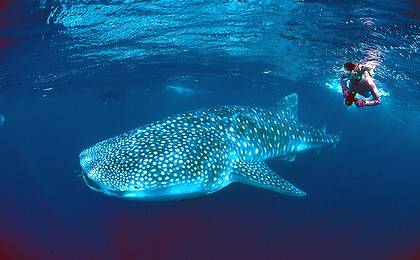 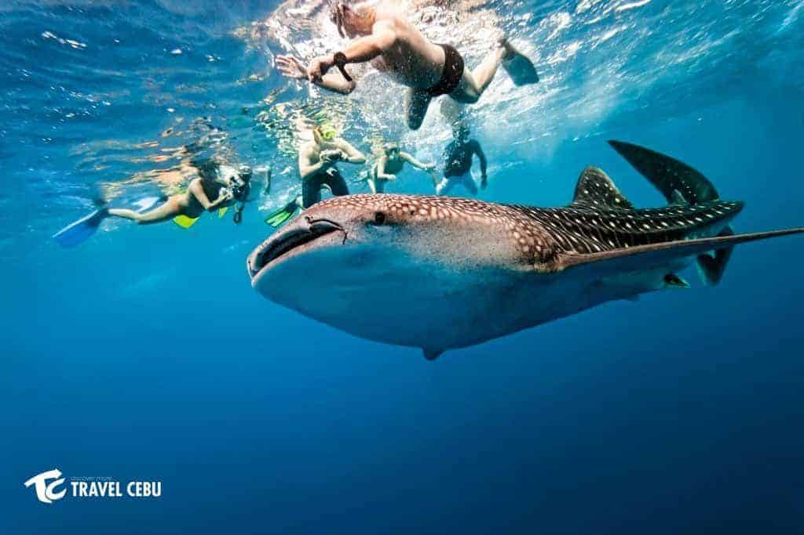Here is another great place to come with your family as Mountain View Nature Park has something for everyone. For the kids, there is a water playground! Let the kids run wild in the shallow pool with slides and stairs. There is also a play place on land that really puts the ‘jungle’ in jungle gym as it is surrounded by lush greenery.
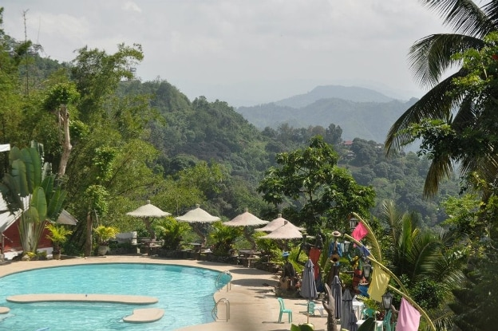 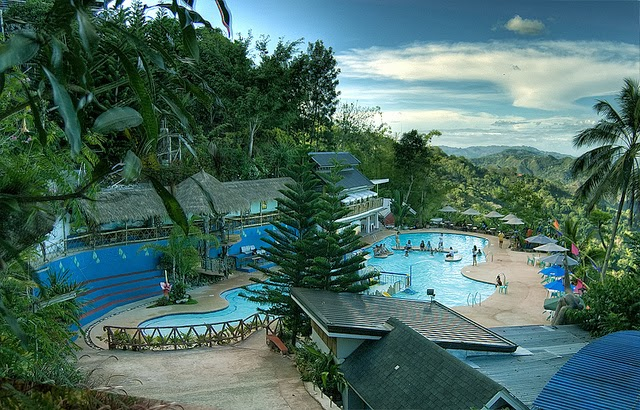The oldest Catholic Church in the Philippines is located right here in Cebu!“Mercy and Passion” are the tenets of Basilica del Santo Nino, founded in 1565, which still bring many locals here to worship on a daily basis. This Catholic Church holds a regular mass where families and children come to show their faith.
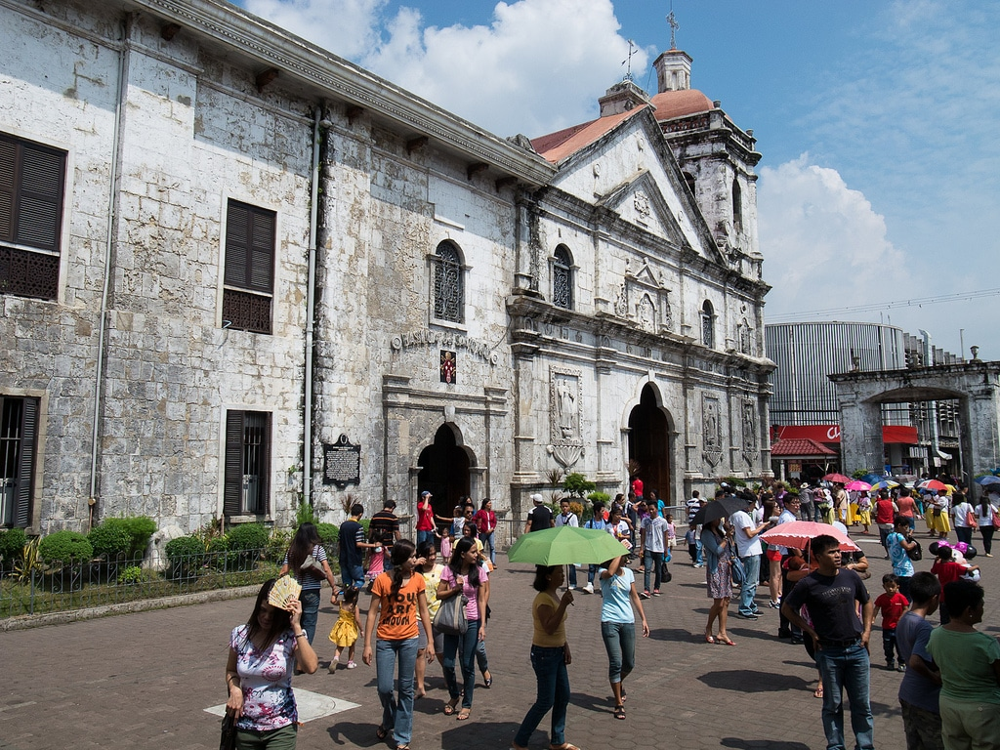 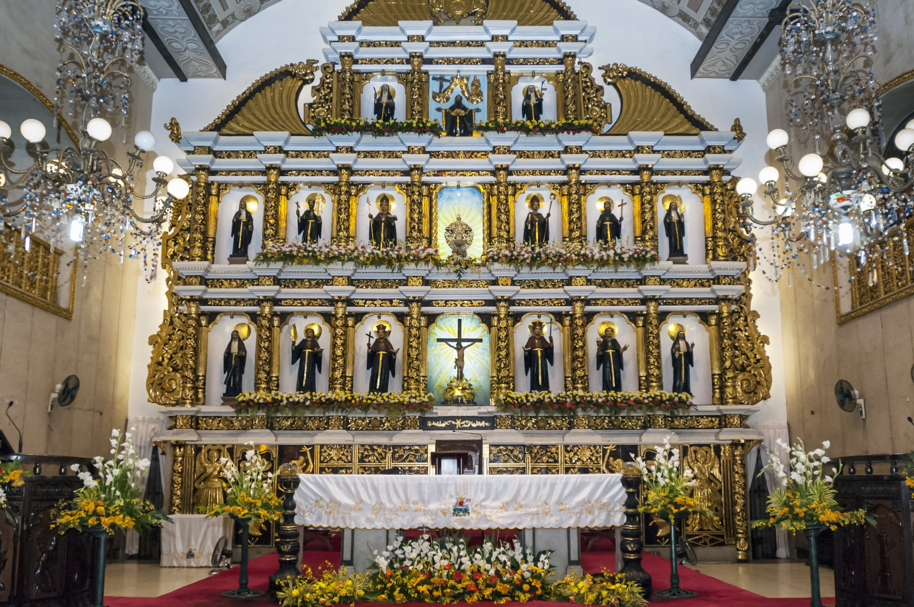There is a good reason why Tops Lookout has remained such a popular tourist destination in Cebu. That’s because you will get the most spectacular 360-degree view from here and only here.Tops Lookout represents what makes the Philippines so special in that you get a taste of lush greenery, intricate city, and winding waterways all in one visit.
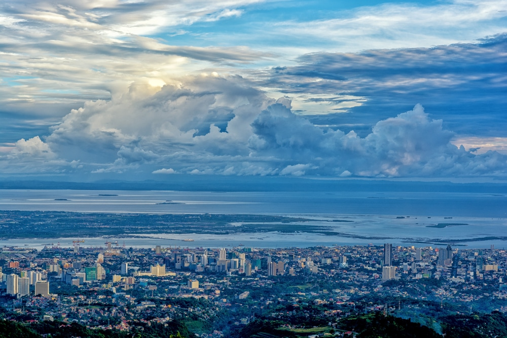
In the Beverly Hills subdivision of Cebu, you’ll find a beautifully designed Taoist Temple. Located 300 meters above sea level, expect lots of steep steps and winding paths that will get your blood pumping as you make you way to the top. Once you reach the temple, you’ll be greeted with beautiful views of the island.
 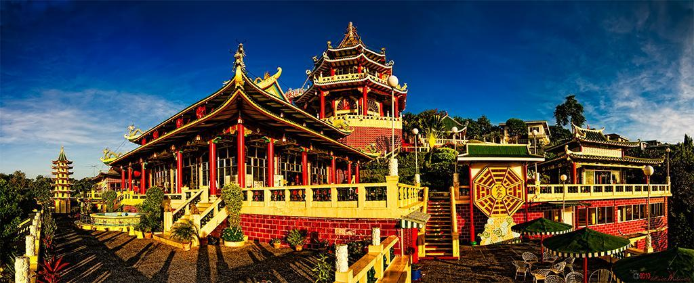
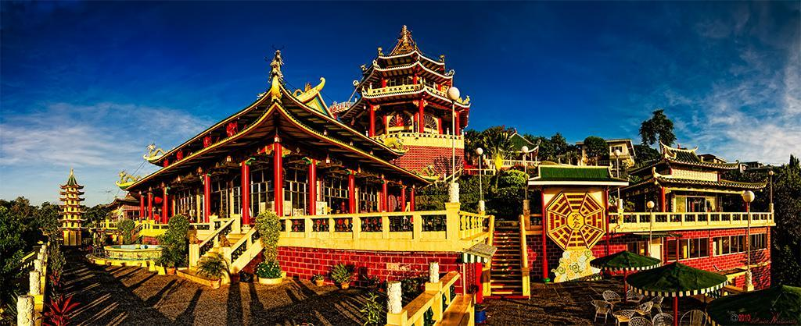
You can get a day pass to Cebu Westown Lagoon, which offers everything a holiday maker needs to kick back and enjoy some rays.This man-made lagoon features refreshing pools of water, gazebos, water fountains, Jacuzzis, and giant pool slides to help you develop a fantastic tan.
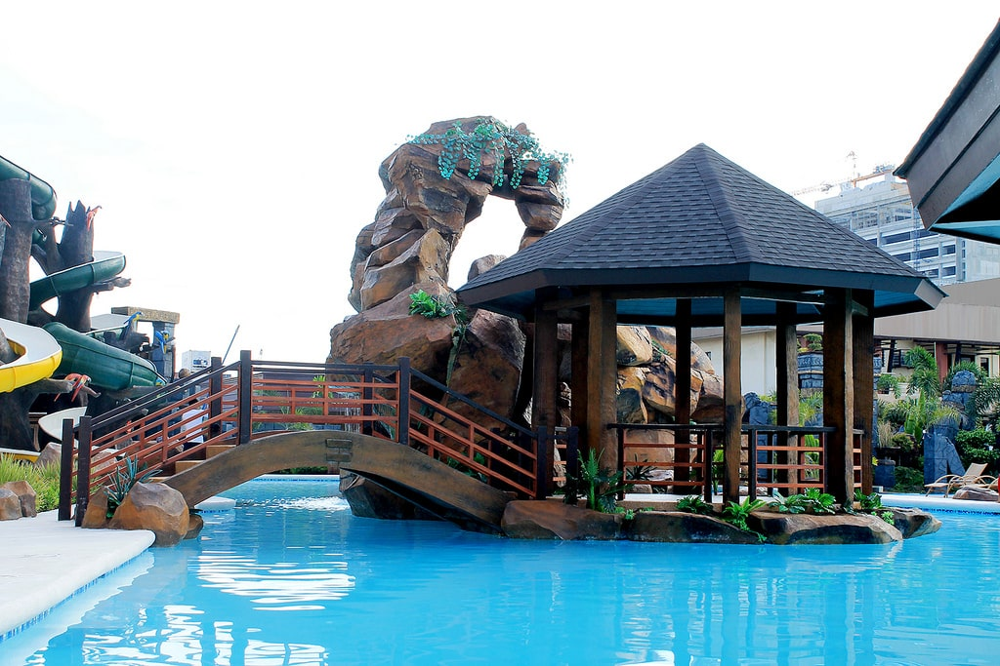 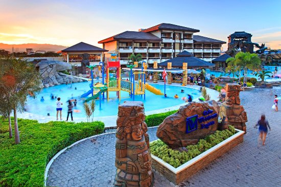Visit Simala Church and be in awe of its castle-like beauty, inspired by the churches in Europe.Get to know the devoted Catholic faith of the locals when you visit the beautiful churches of Simala Shrine.Simala Shrine or Simala Church is located in the south of Cebu. The monastery was built in 1998 by the Marian Monks from Pampanga. It used to be just an ordinary church until after the incidents of miraculous events. One of which is the shedding of tears of the Mother Mary’s image. It paved the way for the shrine’s popularity with devotees constantly flocking the area. Today you can see the beautiful improvements of this monastery and how devotees love to visit the area to do their prayers and appreciate its stunning architectural design.
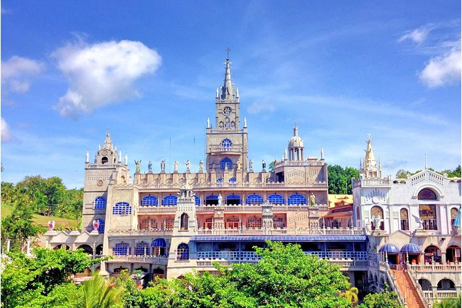 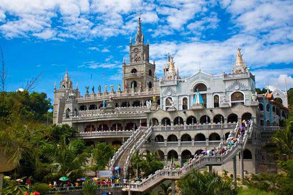You’ve probably heard of 10000 Roses Café & More by now. It is undeniably the most popular and most sought-after café in Cebu today after making a huge buzz on Facebook. For sure, at least three days from now, this Korean café will surely be enjoying the hype now and eventually be worrying about accommodating all these curious and excited guests.
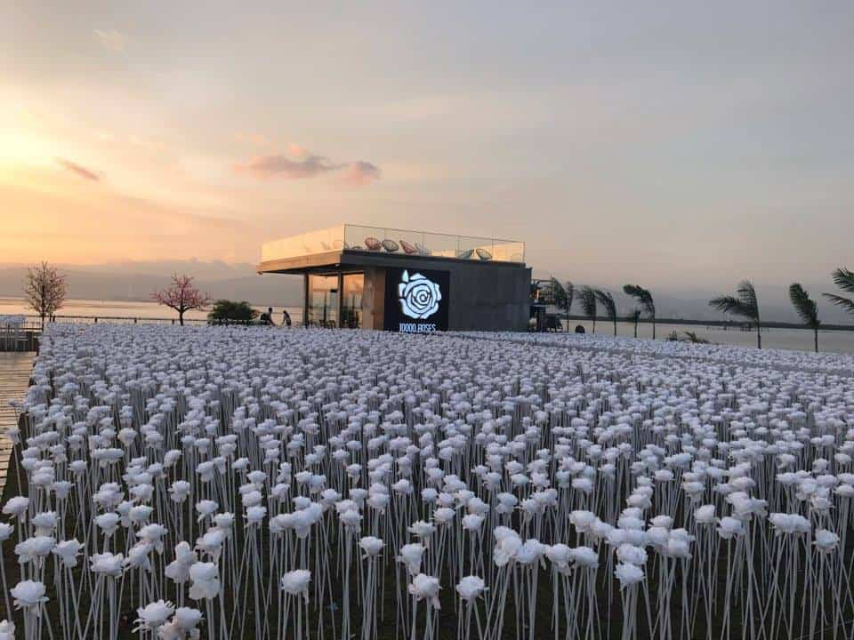 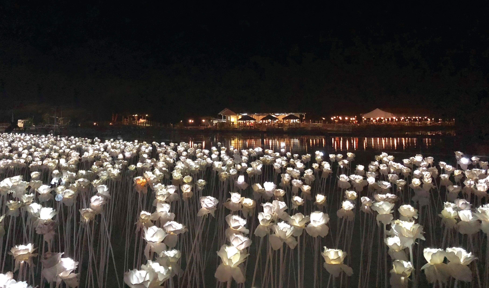The story of Temple of Leah is the same as Taj Mahal, a mausoleum in India built as a symbol of undying love.Temple of Leah is Teodorico Soriano Adarna’s gesture of love to his late wife Leah Albino-Adarna, a life partner for 53 years. They are the grandparents of Filipina actress Ellen Adarna and owner of motel chain Queensland in Cebu.
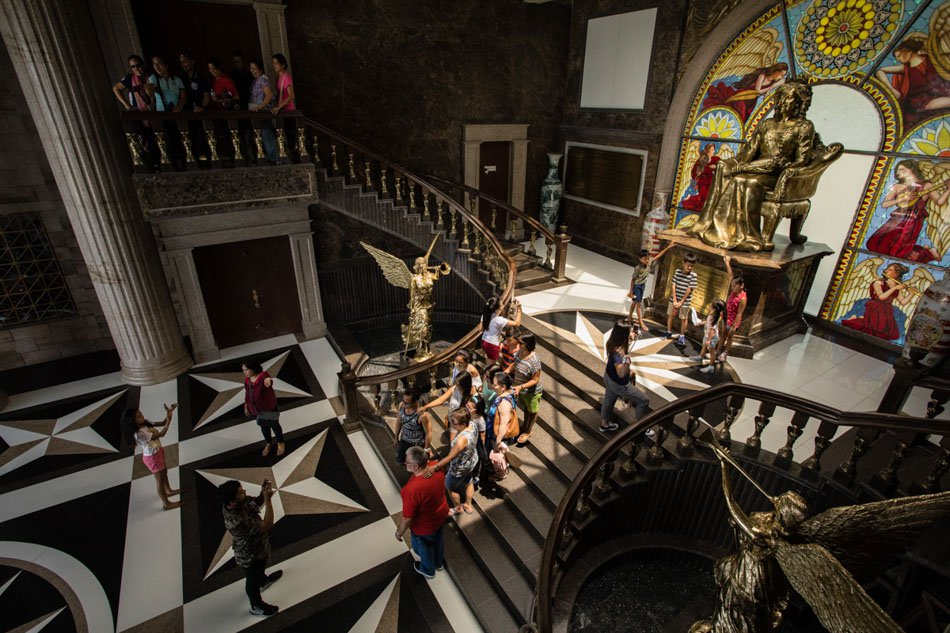 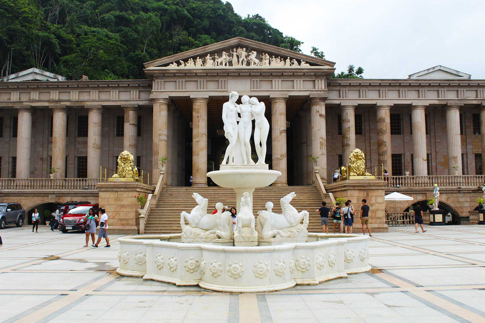


© Sernel Miranda Asunto (2019)